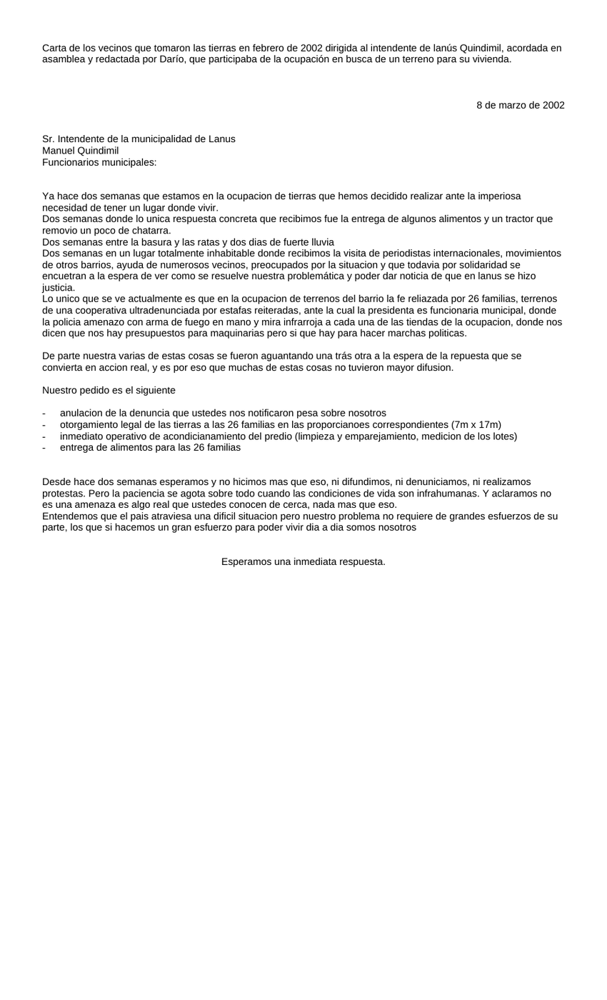

Primera hoja de carta de los vecinos de la toma.doc. Clic en la imagen para abrir o descargar el archivo original.·21.5 KB·1 hoja

Carta de los vecinos que tomaron las tierras en febrero de 2002 dirigida al intendente de lanús Quindimil, acordada en asamblea y redactada por Darío, que participaba de la ocupación en busca de un terreno para su vivienda.
8 de marzo de 2002
Sr. Intendente de la municipalidad de Lanus
Manuel Quindimil
Funcionarios municipales:
Ya hace dos semanas que estamos en la ocupacion de tierras que hemos decidido realizar ante la imperiosa necesidad de tener un lugar donde vivir.
Dos semanas donde lo unica respuesta concreta que recibimos fue la entrega de algunos alimentos y un tractor que removio un poco de chatarra.
Dos semanas entre la basura y las ratas y dos dias de fuerte lluvia
Dos semanas en un lugar totalmente inhabitable donde recibimos la visita de periodistas internacionales, movimientos de otros barrios, ayuda de numerosos vecinos, preocupados por la situacion y que todavia por solidaridad se encuetran a la espera de ver como se resuelve nuestra problemática y poder dar noticia de que en lanus se hizo justicia.
Lo unico que se ve actualmente es que en la ocupacion de terrenos del barrio la fe reliazada por 26 familias, terrenos de una cooperativa ultradenunciada por estafas reiteradas, ante la cual la presidenta es funcionaria municipal, donde la policia amenazo con arma de fuego en mano y mira infrarroja a cada una de las tiendas de la ocupacion, donde nos dicen que nos hay presupuestos para maquinarias pero si que hay para hacer marchas politicas.
De parte nuestra varias de estas cosas se fueron aguantando una trás otra a la espera de la repuesta que se convierta en accion real, y es por eso que muchas de estas cosas no tuvieron mayor difusion.
Nuestro pedido es el siguiente
anulacion de la denuncia que ustedes nos notificaron pesa sobre nosotros
otorgamiento legal de las tierras a las 26 familias en las proporcianoes correspondientes (7m x 17m)
inmediato operativo de acondicianamiento del predio (limpieza y emparejamiento, medicion de los lotes)
entrega de alimentos para las 26 familias
Desde hace dos semanas esperamos y no hicimos mas que eso, ni difundimos, ni denuniciamos, ni realizamos protestas. Pero la paciencia se agota sobre todo cuando las condiciones de vida son infrahumanas. Y aclaramos no es una amenaza es algo real que ustedes conocen de cerca, nada mas que eso.
Entendemos que el pais atraviesa una dificil situacion pero nuestro problema no requiere de grandes esfuerzos de su parte, los que si hacemos un gran esfuerzo para poder vivir dia a dia somos nosotros
Esperamos una inmediata respuesta.
Transcripción del documento original carta de los vecinos de la toma.doc. Se conserva la ortografía del original.